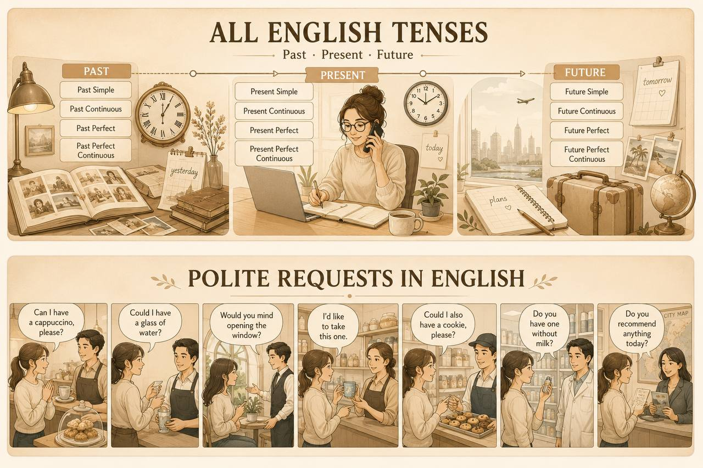
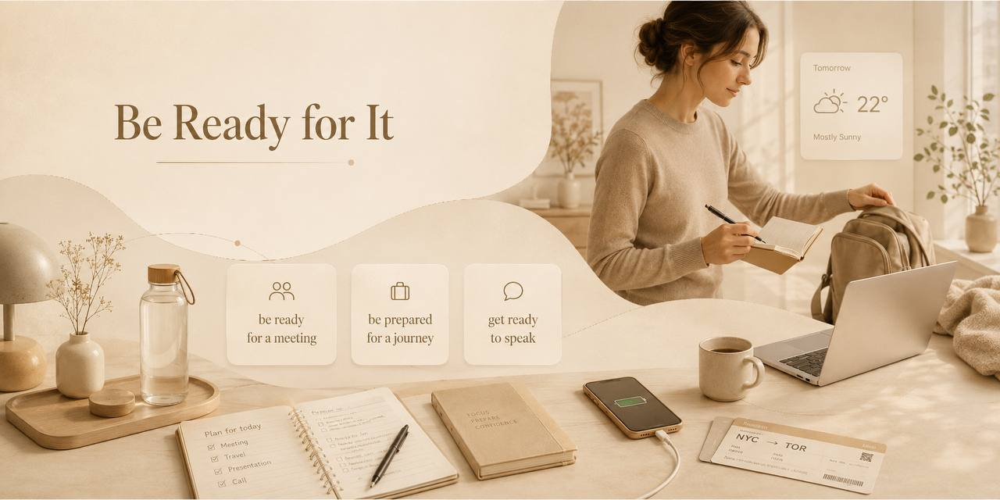
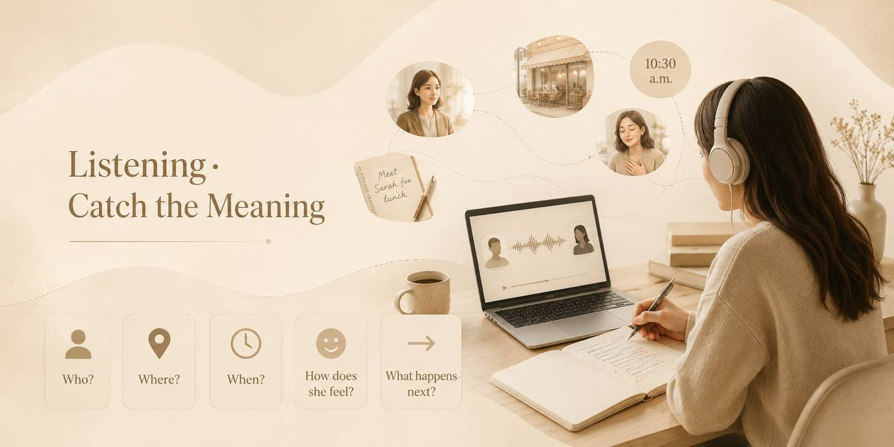
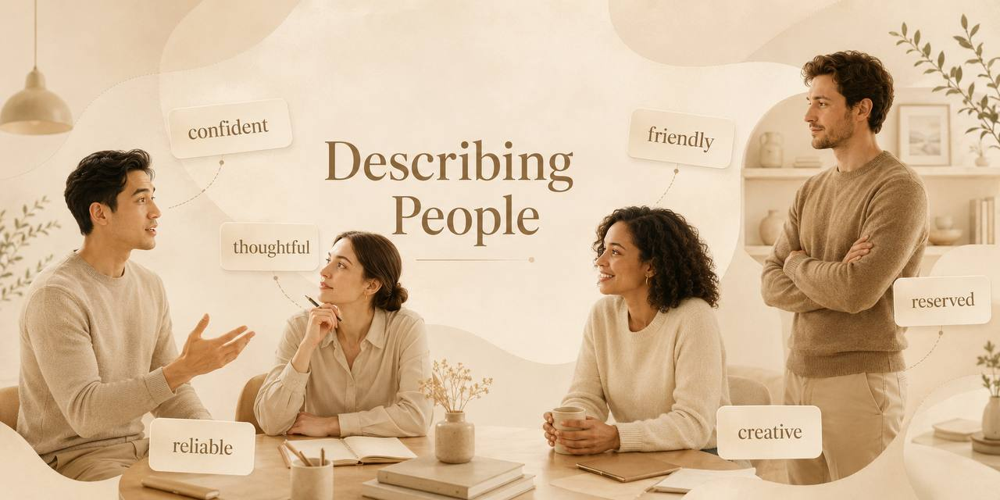
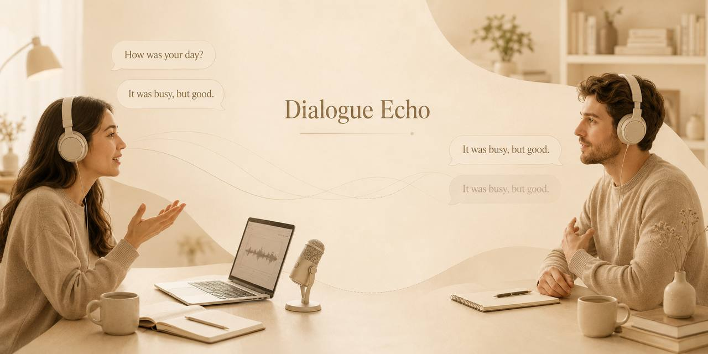
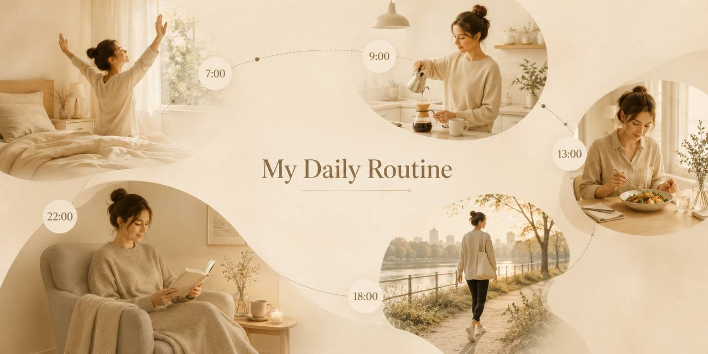
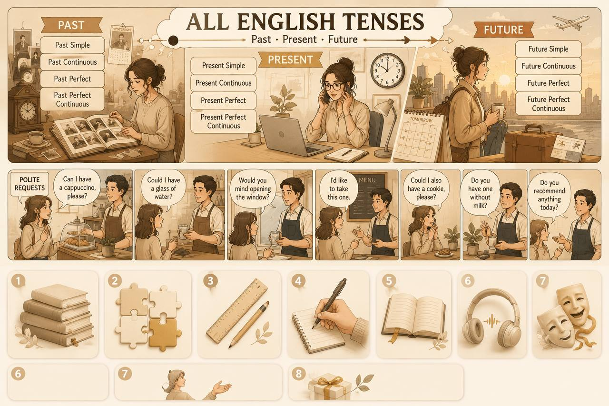
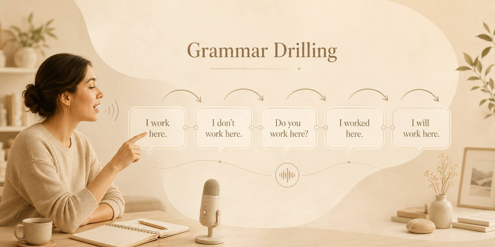
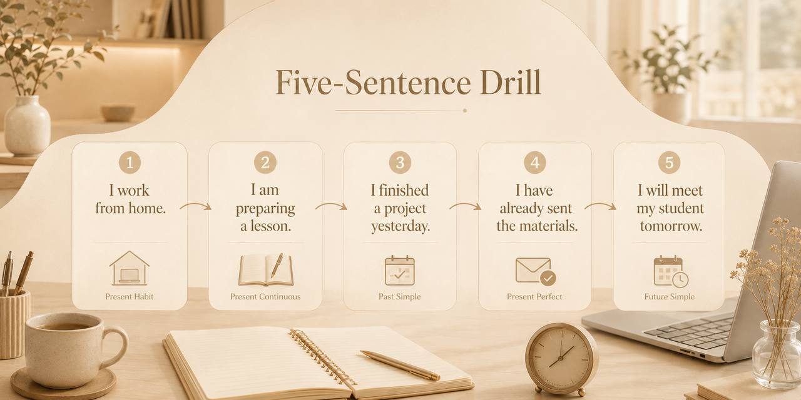

Everything you touched in July — pharmacy dialogues, colleagues at work, your own story from Perm to Canada — in one place. Pick a tab, take a breath, and let's talk.
Three tabs, each about 25–30 minutes. Start with whichever tab feels right — Living English is the warmest, People at Work is the sharpest, My Story is the deepest. You can jump between them any time. Every question is meant to be spoken out loud, not written.
1. I'm ⋯ to penicillin.
2. Do I need a ⋯ for this?
3. What's the ⋯ — one tablet or two?
4. Any ⋯ I should know about?
5. I have a mild ⋯ and I feel a bit ⋯.
1. Could I get a large flat white ⋯, please?
2. Is the carrot cake ⋯?
3. Do you have any ⋯ milk?
4. Can I pay by card, or do you have ⋯?
5. What's the Wi-Fi ⋯?


1. Present Simple: I usually ⋯ tea every morning before work.
2. Present Continuous: Right now I ⋯ my flight schedule.
3. Present Perfect: I ⋯ to Canada in my life.
4. Present Perfect Continuous: She ⋯ on this project since Monday.
5. Past Simple: Yesterday I ⋯ really dizzy after lunch.
6. Past Continuous: While I ⋯ at the pharmacy, the phone rang.
7. Past Perfect: By the time I arrived, they ⋯ the exchange office.
8. Past Perfect Continuous: We ⋯ in Perm for 20 years before Canada.
9. Future Simple: Tomorrow I ⋯ the insurance company.
10. Future Continuous: This time next week we ⋯ to Toronto.
11. Present Passive: Useful information ⋯ to travellers every day.
12. Past Passive: My prescription ⋯ yesterday morning.
13. Conditional 1: If I feel tired tomorrow, I ⋯ a day off.
14. Conditional 2: If I moved to Canada now, I ⋯ my friends.
15. Used to: I ⋯ take a big suitcase, but now I travel light.
Last September, Marina moved to Toronto with her husband and two suitcases. On her very first morning, she was already exhausted. She had been travelling for almost eighteen hours, and the time difference was brutal. Still, she decided to walk to the nearest café.
The barista smiled and asked what she'd like. Marina had rehearsed the phrase in her head at least ten times on the flight — «Could I have a flat white to go, please?» — and it came out clear and confident. The barista handed her the drink and said, «Welcome to the neighbourhood.» That was the moment Marina knew she would be all right.
She walked back to the flat, the coffee warm in her hand, and thought: this is what I've been practising for.

«I had a ⋯ headache and I wasn't sure how to explain what I needed.»
«The pharmacist was very ⋯.»
«I said I have a headache and I feel ⋯.»
«She gave me paracetamol and told me the ⋯.»
«She also asked if I had any ⋯.»
Elena: Hello. I'm not feeling very well.
Pharmacist: What seems to be the problem?
Elena: I have a sore throat, a splitting headache, and I feel a bit dizzy.
Pharmacist: Do you have a fever?
Elena: A mild one, about 38 degrees.
Pharmacist: Any allergies I should know about?
Elena: I'm allergic to penicillin, nothing else.
Pharmacist: I recommend these lozenges and some ibuprofen. Take one tablet every eight hours.
Elena: Is this over-the-counter or do I need a prescription?
Pharmacist: Both are over-the-counter. Anything else?
Elena: Could I also have some antihistamines, just in case? Non-drowsy, please — I'm driving tomorrow.
1. «I have a ⋯ headache and I feel a bit ⋯.»
2. «I'm ⋯ to penicillin, nothing else.»
3. «Is this ⋯ or do I need a ⋯?»
4. «⋯ I also have some antihistamines, just in case?»
Doctor: Good morning. What brings you in today?
Elena: Good morning. I've been feeling awful since last night.
Doctor: Can you describe your symptoms?
Elena: Severe stomach pain, nausea, and I vomited twice around three in the morning.
Doctor: Any fever?
Elena: A slight one — 37.8. I also feel weak and dizzy when I stand up.
Doctor: Did you eat anything unusual yesterday?
Elena: Yes, we had street tacos in the afternoon. I think it started about six hours later.
Doctor: That's likely food poisoning. Take these anti-nausea tablets and use oral rehydration salts. Stick to bland food for 24 hours.
Elena: Does my insurance cover this consultation and the prescription?

1. Before every deadline I feel ⋯.
2. He looks ⋯ when someone interrupts him.
3. She stays ⋯ under pressure.
4. By Friday afternoon I feel completely ⋯.
5. He is quiet but very ⋯ when he speaks.
1. He looks strict, ⋯ he is very fair.
2. She is quiet, ⋯ she is confident.
3. He is tired-looking, ⋯ supportive.
4. He looks confident. ⋯, he feels insecure inside.
5. She is strict, ⋯ very kind.
6. Loud people are energetic, ⋯ exhausting.
7. ⋯ she works long hours, she stays balanced.
8. He is emotionally tired, ⋯ he manages the team well.
Anna, David, Sophie and Marco share one small office. At first glance, they seem completely different. Anna looks strict and neat — she is always well-dressed, but she is actually the most approachable person in the room.
David is quiet and ordinary-looking, yet he is the most reliable one. When things get complicated, everyone turns to him. Sophie is friendly and casually dressed. She talks a lot, which sometimes makes the day exciting and sometimes exhausting.
Marco is the most complicated. He looks confident and calm at first, but under pressure he becomes irritated and emotional. He is not a bad person — he just makes the team feel a little nervous. In the end, though, they respect one another. They know that a good team is not one where everyone is the same.
«They look ⋯ and neatly dressed.»
«They prefer to work ⋯.»
«This person is ⋯ and organised.»
«…but sometimes feels ⋯.»
«They make the working day quiet and ⋯.»

Anna: So, how do you feel about the new colleague?
Mark: At first, I wasn't sure. He looks calm and well-dressed, but I didn't know what to expect.
Anna: First impressions can be tricky. What is he like at work?
Mark: Quite responsible and focused. In stressful situations, he stays calm, which I really appreciate.
Anna: Does he make your day easier?
Mark: Most of the time, yes. He makes me feel more comfortable at work.
Anna: That's important. I find it difficult to work with very emotional people.
Mark: Same here. Emotional or disorganised people make my day more complicated.
Anna: Exactly. It really affects my mood.
Mark: I need people who are supportive, not stressful.
Anna: Would you say personality matters more than appearance?
Mark: Definitely. For me, personality is much more important than appearance.

1. Long commutes are ⋯.
2. The idea of moving to Canada is ⋯.
3. My morning ⋯ keeps me calm.
4. Walking outside helps me ⋯.
5. A ⋯ is my goal every morning.



1. I ⋯ feel overwhelmed by change.
2. She ⋯ like coffee, but now she drinks it every morning.
3. ⋯ live in Perm as a child?
4. I ⋯ about Canada for months.
5. He ⋯ abroad since 2015.
6. I ⋯ well lately — too much on my mind.
7. ⋯ more time, I would learn to cook properly.
8. If I moved to Canada tomorrow, I ⋯ my grandmother's ring with me.
9. If I ⋯ you, I would start packing early.
10. If my English were perfect, I ⋯ next month.
A year ago, I used to feel that big changes were something that happened to other people. My routine was familiar, my city was familiar, and the idea of moving abroad felt unrealistic — a story other families lived, not mine.
Something changed this year. I don't know exactly when. I started saying yes to things that scared me. I started studying English more seriously. I've been reading in English for about six months now, and last week I finished my first English book without a dictionary.
If someone had told me a year ago that I would be moving to Canada with my family in six months, I would have laughed. Nervously, but I would have laughed. Now, I look at my suitcase in the corner and I think: this is not other families' story anymore. This is ours.
«I ⋯ be a real morning person.»
«I ⋯ at six every day.»
«My routine ⋯.»
«I ⋯ anymore.»
«I ⋯ to rebuild my old routine.»